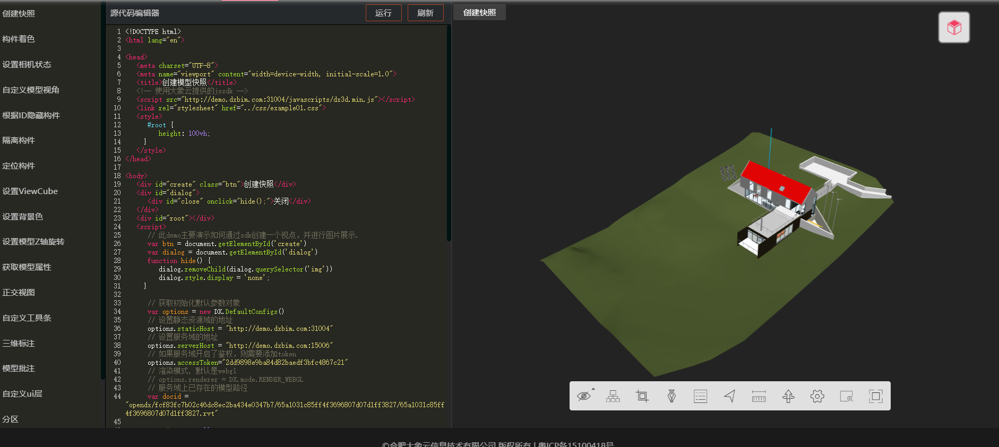
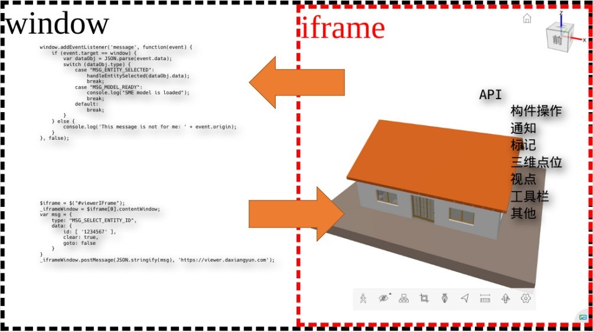

平台基于业务数据完整性需求，以提升绘制和网络传输效率为目标，针对原始模型中三维几何数据、材质信息、构件属性信息定义了一套场景描述。原始模型需要经过模型转化服务转化为自定场景数据，该数据包含了模型和属性的双向驱动关联、可配置的三维场景优化选项、扩展以及获取数据接口等。
模型转化服务为提供API接口支持用户上传模型，转化模型，创建装配模型，删除模型等操作。
可视化服务支持用户把三维可视化服务集成到自己的业务场景中。可视化服务的集成提供了Javascript SDK和iframe嵌入两种模式：
Javascript SDK的支持用户基于平台的SDK二次开发可视化应用，实现最大程度的自定义。用户可以使用SDK加载模型，操作模型，定制UI等。
平台还提供完整的模型预览页面，支持应用以iframe的形式把三维模型的可视化服务集成到应用中。相较于JS SDK，集成iframe的可定制程度有一定的限制，当然需要的开发工作量也会小一些。
数据服务用来为用户提供模型的数据服务，平台除了从原始格式中获取几何数据之外，也会获取模型构件的属性数据。数据服务支持应用通过API接口获取模型的非几何数据。 目前支持如下数据服务：